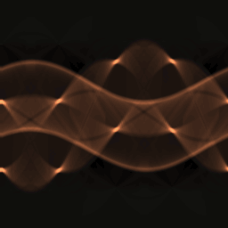
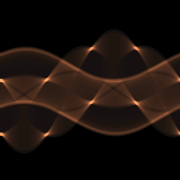
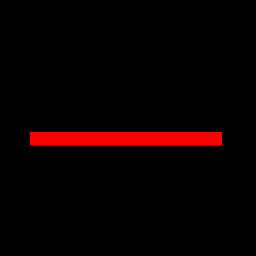
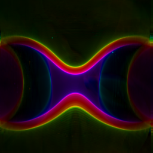

Computing Fourier Integral Operators
|  |  | |
| Input | Modified Box Algorithm | Reference Algorithm |
Radon transform (sinogram) computed using the modified box algorithm, as well as a standard reference algorithm. While modified box only approximates the Radon transform, it is quite close to the true result.
|  |  | |
| Input | Modified Box Algorithm | Reference Algorithm |
Half-wave propagator computed using the modified box algorithm, as well as a reference pseudospectral algorithm. Brightness and hue represent the complex amplitude and phase.
Fourier integral operators (FIOs) are a class of mathematical operators with a rather technical mathematical description but also widespread real-world applications. Some examples of these operators are:
- – propagation of sound, light, and mechanical waves in complex media
- – the Radon transform and X-ray transform, which model CT imaging
- – differential and pseudodifferential operators
In imaging, FIOs can be very helpful in understanding what kind of features can be accurately reconstructed from available data, and what artifacts may occur. If the underlying physical process is described by an FIO, an asymptotic formula for image formation can usually be derived.
In this project, I refined and implemented the modified box algorithm of de Hoop et al.[1], which can approximately compute a large subclass of FIOs, including the examples listed above. Unlike previous algorithms, the new algorithm uses a very natural description of the operator that is usually easy to derive and numerically implement. You can find the mathematical details in this paper and the MATLAB/C++ code on GitHub.
Below, several examples of the new modified box algorithm for some common imaging operators are shown. While not implemented yet, it is also possible to automatically compute an FIO's inverse with no additional information.
[1] M. V. de Hoop, G. Uhlmann, A. Vasy, and H. Wendt, "Multiscale discrete approximations of Fourier integral operators associated with canonical transformations and caustics." Multiscale Model. Simul. 11 (2013).